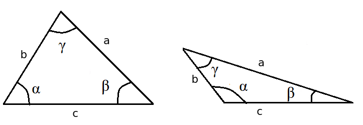
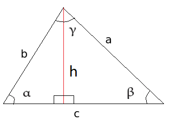
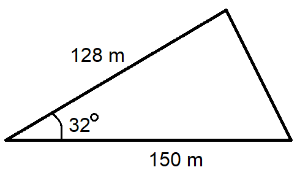
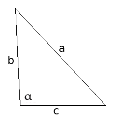

Yleiset kolmiot
Contents
Yleiset kolmiot#
Yleisessä eli vinokulmaisessa kolmiossa kaikki kulmat voivat olla teräviä, tai yksi kulma on tylppä ja kaksi teräviä. Kolmio pitää olettaa vinokulmaiseksi, jos ei ole erikseen kerrottu, että se on suorakulmainen. Kaikkia tässä osioissa esiteltyjä laskukaavoja voidaan käyttää myös suorakulmaisille kolmioille. Sen sijaan suorakulmaisen kolmion omia laskusääntöjä (Pythagoraan lause ja suorakulmaisen kolmion trigonometriset funktiot) voidaan käyttää vain suorakulmaisille kolmioille.

Kolmioepäyhtälöt#
Kolmioepäyhtälön avulla voidaan tarkistaa, onko kyseessä ylipäätään kolmio. Kolmion kaikkien sivujen pitää yltää yhdistymään toisiinsa! Matematiikan merkinnöin tämä ilmaistaan siten, että jos sivujen pituudet ovat \(a\), \(b\) ja \(c\), on seuraavien epäyhtälöiden oltava voimassa:
(1) \(a+b>c\)
(2) \(a+c>b\)
(3) \(b+c>a\)
Esim. Voivatko kolmion sivujen pituudet olla \(a=20\), \(b=40\) ja \(c=50\)?
Ratkaisu
Tarkistetaan, ovatko kaikki kolme kolmioepäyhtälöä voimassa:
(1) \(a+b=20+40=60,60>50\), OK
(2) \(a+c=20+50=70,70>40\), OK
(3) \(b+c=40+50=90,90>20\), OK
Kaikki epäyhtälöt toteutuvat, joten kolmion sivujen pituudet ovat mahdolliset.
Esim. Millä luvun a arvoilla janoista, joiden pituudet ovat \(a\), \(a+3\) ja \(a+5\) voi muodostaa kolmion?
Ratkaisu
Ratkaistaan epäyhtälöt:
(1) \(a+a+3>a+5 \leftrightarrow 2a+3>a+5 \leftrightarrow 2a-a>5-3 \leftrightarrow a>2\)
(2) \(a+a+5>a+3 \leftrightarrow 2a+5>a+3 \leftrightarrow 2a-a>3-5 \leftrightarrow a>-2\)
(3) \(a+3+a+5>a \leftrightarrow 2a+8>a \leftrightarrow 2a-a>-8 \leftrightarrow a>-8\).
Ehdot (2) ja (3) täyttyvät kaikilla mahdollisilla sivun pituuksilla, sillä sivujen pituudet ovat varmasti positiivisia. Rajoitteeksi jää ehto (1) eli on oltava \(a>2\).
Yleisen kolmion pinta-ala#
Kolmion pinta-alan \(A\) voi laskea seuraavalla kaavalla: \(A=\frac{1}{2} bc \sin{\alpha}\), missä \(b\) ja \(c\) ovat mitkä tahansa kaksi kolmion sivua, ja \(\alpha\) niiden välinen kulma.
Perustelu

Kuvan kolmiossa korkeus \(h\) saadaan hyödyntämällä suorakulmaisen kolmion trigonometriaa kolmioon, joka muodostuu piirtämällä vinokulmaiseen kolmioon korkeusjana \(h\). Kuvan tapauksessa kolmion kantana on sivu \(c\).
Sinin määritelmän mukaan \(sin{\alpha}=\frac{h}{b}\), josta saadaan \(h=b \sin{\alpha}\). Siis ala on \(A=\frac{ch}{2}=\frac{1}{2} bc \sin{\alpha}\).
Vastaavasti ala voidaan määritellä piirtämällä korkeusjana mistä tahansa kolmion kärjestä vastaavalla kannalle.
Esim. Laske kuvan kolmion pinta-ala.

Ratkaisu
Pinta-ala on \(A=\frac{1}{2}\cdot 150~\text{m}\cdot 128~\text{m}\sin{32^{\circ}}=5087~\text{m}^2\).
Minkä tahansa kolmion pinta-ala \(A\) voidaan laskea myös ns. Heronin kaavan avulla: \(A=\sqrt{d(d-a)(d-b)(d-c)}\), missä \(a, b, c\) ovat kolmion sivujen pituudet ja \(d=\frac{1}{2}(a+b+c)\) on kolmion piirin eli ympärysmitan puolikas.
Heronin kaavan perustelu löytyy esimerkiksi Matematiikkalehti Solmusta.
Esim. Kolmion sivujen pituudet ovat 2, 3 ja 4. Laske pinta-ala.
Ratkaisu
Lasketaan ensin kolmion piirin puolikas: \(d=\frac{1}{2}\cdot (2+3+4)=\frac{9}{2}=4.5\) Pinta-ala saadaan sijoittamalla laskettu luku ja annetut sivujen pituudet Heronin kaavaan.
\(A=\sqrt{(4.5\cdot (4.5-2)\cdot (4.5-3)\cdot (4.5-4)}\)
\(A=\sqrt{4.5\cdot 2.5 \cdot 1.5 \cdot 0.5}\)
\(A=\sqrt{8.4375}=2.9\)
Sinilause#
Sinilause: kulman sinin ja kulman vastaisen sivun pituuden suhde on vakio, siis
\(\frac{\sin{\alpha}}{a}=\frac{\sin{\beta}}{b}=\frac{\sin{\gamma}}{c}\).
Sinilause voidaan esittää myös muodossa
\(\frac{a}{\sin{\alpha}}=\frac{b}{\sin{\beta}}=\frac{c}{\sin{\gamma}}\).
Käytännössä sinilauseesta käytetään vain osaa kerrallaan. Jos tunnetaan kaksi sivua ja toisen vastainen kulma, voidaan ratkaista toisenkin sivun vastainen kulma. Vastaavasti jos tunnetaan kaksi kulmaa ja toista vastapäätä olevan sivun pituus, voidaan toisenkin sivun pituus selvittää. Kolmaskin kulma tietysti selviää, kun muistetaan, että kolmiot kulmat ovat yhteensä 180 astetta.
Sinilauseen perustelu
Kolmion alalle saatiin jo aiemmin määritelmä: ala on kahden sivun pituuksien tulo, kerrottuna sivujen välisen kulman sinillä, ja jaettuna kahdella. Kolmion pinta-alan pitää olla sama, olivatpa laskussa käytetyt kaksi sivua mitkä tahansa kolmion sivuista. Niinpä tulee olla
\(\frac{1}{2} bc \sin {\alpha} = \frac{1}{2} ac \sin{\beta} = \frac{1}{2} ab \sin{\gamma}\).
Tarkastellaan kahden ensimmäisen lausekkeen yhtäsuuruutta:
\(\frac{1}{2} bc \sin {\alpha} = \frac{1}{2} ac \sin{\beta}\)
Kerrotaan molemmat puolet kahdella ja jaetaan molemmat puolet luvulla \(c > 0\), jonka jälkeen yhtälö on sieventynyt muotoon
\(b \sin{\alpha} = a \sin{\beta}\).
Yhtälö on muokattavissa muotoon \(\frac{\sin{\alpha}}{a}=\frac{\sin{\beta}}{b}\).
Vastaavasti voidaan verrata 1. ja 3. lauseketta sekä 2. ja 3. lauseketta.
Esim. Ratkaise sivun \(a\) pituus, kun \(b=10~\text{m}, \beta=35^{\circ}, \alpha=52^{\circ}\). Merkinnät ovat samat kuin sivun yläreunan kolmiossa.
Ratkaisu
Ratkaistaan sinilauseesta kysytty suure \(a\):
\(\frac{a}{\sin{\alpha}} = \frac{b}{\sin{\beta}} \leftrightarrow a = b \frac{\sin{\alpha}}{\sin{\beta}} \leftrightarrow a=10~\text{m} \frac{\sin{52^{\circ}}}{\sin{35^{\circ}}}=13.74~\text{m}\).
Esim. Ratkaise kulma \(\alpha\), kun \(a=80~\text{m}, c=95~\text{m}, \gamma=45^{\circ}\). Merkinnät ovat samat kuin sivun yläreunan kolmiossa.
Ratkaisu
Ratkaistaan kysytty suure \(\alpha\) sinilauseesta. Yhtälön ratkaisu on lyhyempi, kun sinilause kirjoitetaan toisessa järjestyksessä kuin edellisessä esimerkissä.
\(\frac{\sin{\alpha}}{a}=\frac{\sin{\gamma}}{c} \leftrightarrow \sin{\alpha}=\frac{a}{c} \sin{\gamma} \leftrightarrow \sin{\alpha}=\frac{80~\text{m}}{95~\text {m}}\cdot \sin{45^{\circ}} \leftrightarrow \alpha \approx 36.5^{\circ}\).
Esim. Ratkaise kuviosta sivun \(x\) pituus.

Ratkaisu
Sinilauseen käyttämiseksi pitäisi tietää ainoan tunnetun sivun vastaisen kulman suuruus. Koska kolmion kulmien summa on aina \(180^{\circ}\), niin tuntematon kulma on \((180-47-39)^{\circ}=94^{\circ}\). Nyt sinilauseen perusteella
\(\frac{128}{\sin{94^{\circ}}}=\frac{x}{\sin{47^{\circ}}}\leftrightarrow x = 128\cdot \frac{\sin{47^{\circ}}}{\sin{94^{\circ}}} \approx 94\).
Kosinilause#
Kosinilause on laskusääntö, jonka mukaan tietyn kulman kyljet, kulman vastainen sivu ja kulman kosini ovat yhteydessä toisiinsa seuraavien yhtälöiden mukaisesti:
\(c^2=a^2+b^2-2ab \cos{\gamma}\)
\(b^2=a^2+c^2-2ac \cos{\beta}\)
\(a^2=b^2+c^2-2bc \cos{\alpha}\)
Yhtälöiden oikealle puolelle tulee siis aina yhtälön vasemmalla puolella olevaa sivua vastapäätä oleva kulma.
Kosinilauseen perustelu

Kosinilause voidaan perustella piirtämällä kolmioon korkeusjana ja ilmaisemalla sen pituus \(h\) kahdella eri tavalla. Korkeus ilmaistaan nyt Pythagoraan lauseen avulla kahdessa eri kolmiossa. Korkeuden pitää olla sama molemmilla tavoilla ilmaistuna. Tästä seuraa, että myös korkeuden toisen potenssin \(h^2\) tulee olla sama. Tällä ei ole muuta merkitystä kuin se, että laskusta tulee hieman lyhyempi.
Korkeusjana jakaa kolmion kannan \(c\) osiin \(x\) ja \(c-x\). Vasemmalle puolelle muodostuvasta suorakulmaisesta kolmiosta nähdään, että \(\cos{\alpha}=\frac{x}{b}\), joten \(x=b\cos{\alpha}\). Niinpä kanta jakautuu osiin \(b \cos{\alpha}\) ja \(c-b\cos{\alpha}\).
Ratkaistaan nyt korkeusjanan \(h\) toinen potenssi \(h^2\) Pythagoraan lauseen avulla vasemmanpuoleisen kolmion merkinnöin:
\((b \cos{\alpha})^2 + h^2 = b^2\), josta seuraa \(h^2 = b^2 - (b \cos{\alpha})^2 = b^2 - b^2 \cos^2{\alpha}\).
Oikeanpuoleisesta kolmiosta saadaan vastaavasti
\((c-b \cos{\alpha})^2 + h^2 = a^2\), josta saadaan binomikaavan avulla
\(c^2 -2bc \cos{\alpha} + b^2 \cos^2{\alpha} + h^2 = a^2\)
ja edelleen
\(h^2 = a^2 - c^2 + 2bc \cos{\alpha} - b^2 \cos^2{\alpha}\)
Nyt yhtälöiden oikeiden puolien pitää olla samat:
\(b^2-b^2 \cos^2{\alpha}=a^2-c^2+2bc \cos{\alpha}-b^2 \cos^2{\alpha}\)
Lisätään yhtälön molemmille puolille \(b^2 \cos^2{\alpha}\), jolloin yhtälö sievenee muotoon
\(b^2=a^2-c^2+2 bc \cos{\alpha}\)
josta voidaan ratkaista
\(a^2 = b^2+c^2-2bc \cos{\alpha}\).
Vastaavasti voidaan johtaa kosinilause piirtämällä korkeusjana jostakin muusta kärjestä sitä vastaavalle kannalle.
Esim. Ratkaise kuvan kolmiosta sivu \(a\), kun tiedetään, että \(b=389, c=372, \alpha={91.9^{\circ}}\).

Ratkaisu
Kosinilauseen nojalla \(a^2=b^2+c^2-2bc \cos{\alpha}\), joten \(a^2=389^2+372^2-2\cdot 389\cdot 372 \cos{91.9^{\circ}}\), josta saadaan \(a^2=299300.639\) ja edelleen \(a=547\).
Esim. Kuinka suuret ovat kolmion kulmat \(\alpha, \beta, \gamma\), kun sivujen pituudet ovat \(a=10, b=7, c=5\)?
Ratkaisu
Ratkaistaan ensin kulma \(\alpha\) kirjoittamalla kosinilause siten, että yhtälön toiselle puolelle tulee kulma \(\alpha\) ja toiselle puolelle kyseistä kulmaa vastapäätä oleva sivu \(a\).
\(a^2=b^2+c^2-2bc \cos{\alpha}\)
\(b^2+c^2-2bc \cos{\alpha}=a^2\)
\(-2bc \cos{\alpha}=a^2-b^2-c^2\)
\(\cos{\alpha}=\frac{a^2-b^2-c^2}{-2bc}\)
\(\cos{\alpha}=\frac{10^2-7^2-5^2}{-2\cdot 7 \cdot 5}\)
\(\cos{\alpha} = -0.371\)
\(\alpha=\arccos{-0.371}\)
\(\alpha = 111.8^{\circ}\).
Kulman \(\beta\) voi ratkaista vastaavalla tavalla kosinilauseella:
\(b^2=a^2+c^2-2ac \cos{\beta}\)
\(\cos{\beta}=\frac{b^2-a^2-c^2}{-2ac}\)
\(\cos{\beta}=\frac{7^2-10^2-5^2}{-2\cdot 10 \cdot5}\)
\(\cos{\beta} = 0.76\)$
\(\beta = \arccos{0.76}\)
\(\beta=40.5^{\circ}\).
Kulman ratkaisu onnistuisi myös sinilauseella:
\(\frac{\sin{\beta}}{7}=\frac{\sin{\alpha}}{10}\)
\(\beta=\arcsin{\sin{111.8^{\circ}}\frac{7}{10}}\)
\(\beta = 40.5^{\circ}\)
Kolmas kulma saadaan helposti vähennyslaskulla: \(\gamma=(180-111.8-40.5)^{\circ}=27.7^{\circ}\).